Music
155 no-prep Music resources with answer keys: reading comprehension, reading trails, and more – filter by grade.
155 resources
Grade

Bell Making Reading Comprehension Passages | Music Scavenger Hunt 5-6
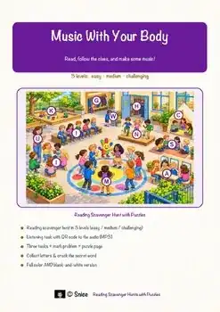
Body Percussion Reading Comprehension Passages | Music Scavenger Hunt 1-2

Free Time Reading Comprehension Passages | Life Skills Scavenger Hunt 5-6

Folk Dance Reading Comprehension Passages | Music Scavenger Hunt 3-4

Sheet Music Reading Comprehension Passages | Music Scavenger Hunt 3-4

Musical Instruments Reading Comprehension BUNDLE | Orchestra & Piano

Famous Composers Reading Comprehension BUNDLE | Cloze, Listening & Word Search

Biblioteca – Italian Reading: Cloze Text, Listening Task & Word Search (Scheda)

Flauto traverso – Italian Reading: Cloze, Listening & Word Search

Flauto dolce – Italian Reading: Cloze, Listening & Word Search

Flauti – Italian Reading: Cloze Text, Listening Task & Word Search (Scheda)

Fisarmonica – Italian Reading: Cloze Text, Listening Task & Word Search (Scheda)
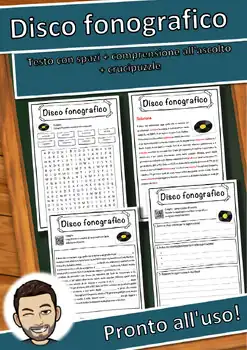
Disco fonografico – Italian Reading: Cloze, Listening & Word Search
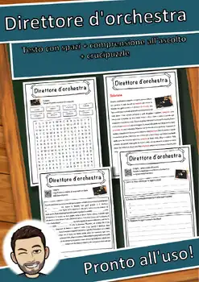
Direttore d'orchestra – Italian Reading: Cloze, Listening & Word Search
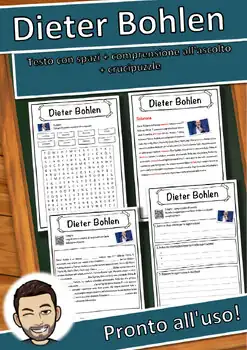
Dieter Bohlen – Italian Reading: Cloze, Listening & Word Search
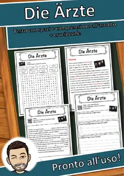
Die Ärzte – Italian Reading: Cloze Text, Listening Task & Word Search (Scheda)
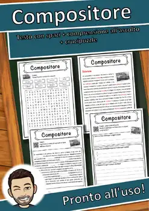
Compositore – Italian Reading: Cloze Text, Listening Task & Word Search (Scheda)
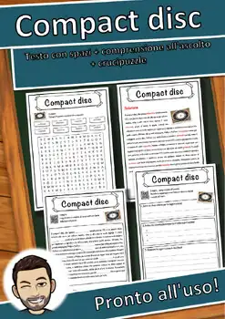
Compact disc – Italian Reading: Cloze, Listening & Word Search
Clarinetto – Italian Reading: Cloze Text, Listening Task & Word Search (Scheda)
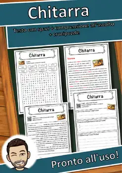
Chitarra – Italian Reading: Cloze Text, Listening Task & Word Search (Scheda)
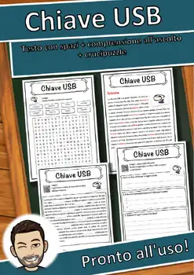
Chiave USB – Italian Reading: Cloze Text, Listening Task & Word Search (Scheda)
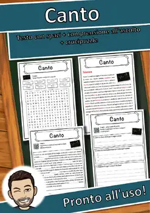
Canto – Italian Reading: Cloze Text, Listening Task & Word Search (Scheda)
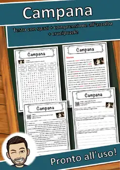
Campana – Italian Reading: Cloze Text, Listening Task & Word Search (Scheda)
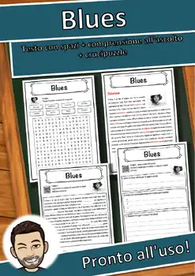
Blues – Italian Reading: Cloze Text, Listening Task & Word Search (Scheda)
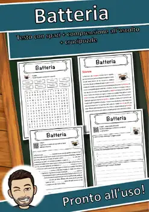
Batteria – Italian Reading: Cloze Text, Listening Task & Word Search (Scheda)
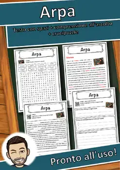
Arpa – Italian Reading: Cloze Text, Listening Task & Word Search (Scheda)
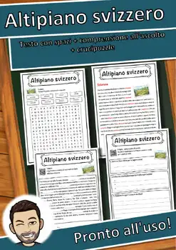
Altipiano svizzero – Italian Reading: Cloze, Listening & Word Search
Bouzouki – Reading Comprehension: Cloze Text, Listening Task & Word Search
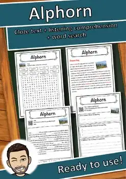
Alphorn – Reading Comprehension: Cloze Text, Listening Task & Word Search
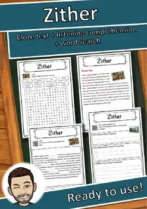
Zither – Reading Comprehension: Cloze Text, Listening Task & Word Search
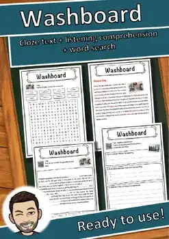
Washboard – Reading Comprehension: Cloze Text, Listening Task & Word Search
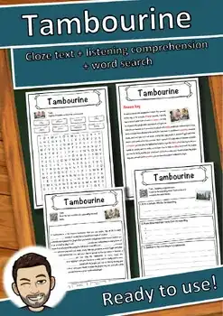
Tambourine – Reading Comprehension: Cloze Text, Listening Task & Word Search
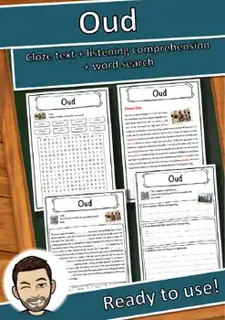
Oud – Reading Comprehension: Cloze Text, Listening Task & Word Search
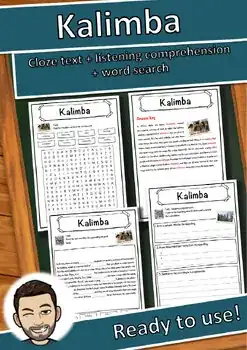
Kalimba – Reading Comprehension: Cloze Text, Listening Task & Word Search
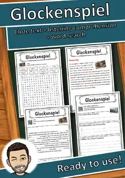
Glockenspiel – Reading Comprehension: Cloze Text, Listening Task & Word Search
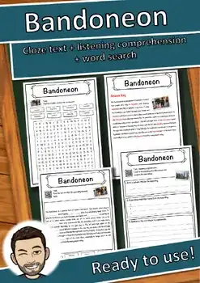
Bandoneon – Reading Comprehension: Cloze Text, Listening Task & Word Search
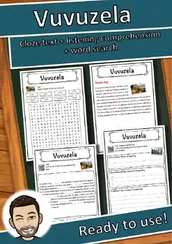
Vuvuzela – Reading Comprehension: Cloze Text, Listening Task & Word Search
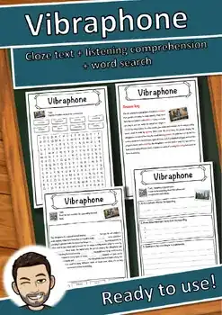
Vibraphone – Reading Comprehension: Cloze Text, Listening Task & Word Search
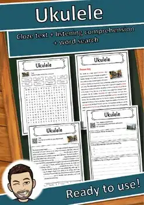
Ukulele – Reading Comprehension: Cloze Text, Listening Task & Word Search
Triangle – Reading Comprehension: Cloze Text, Listening Task & Word Search
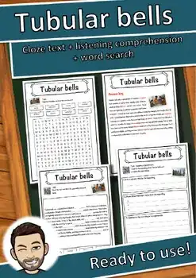
Tubular bells – Reading Comprehension: Cloze Text, Listening Task & Word Search
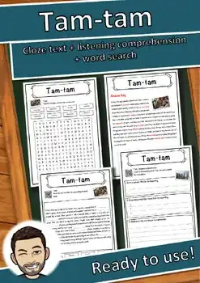
Tam-tam – Reading Comprehension: Cloze Text, Listening Task & Word Search
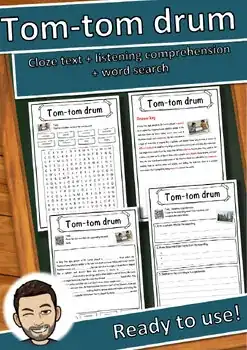
Tom-tom drum – Reading Comprehension: Cloze Text, Listening Task & Word Search
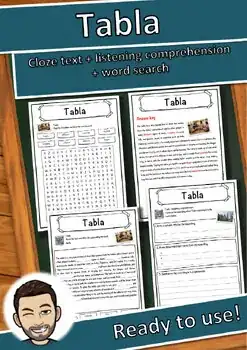
Tabla – Reading Comprehension: Cloze Text, Listening Task & Word Search
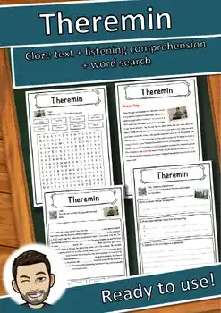
Theremin – Reading Comprehension: Cloze Text, Listening Task & Word Search
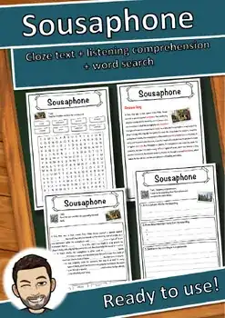
Sousaphone – Reading Comprehension: Cloze Text, Listening Task & Word Search
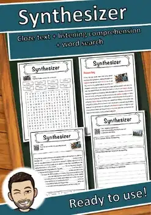
Synthesizer – Reading Comprehension: Cloze Text, Listening Task & Word Search
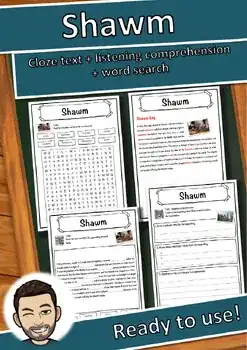
Shawm – Reading Comprehension: Cloze Text, Listening Task & Word Search
No resources found – try a different search term or filter.